Ce guide couvre les deux sources de données : (1) les connecteurs API, à renseigner dans la page « Credentials API », et (2) l'import des fichiers CSV, via la page « Ajouter mes chiffres ». Le sommaire ci-dessous liste les plateformes couvertes.
https://soundcloud.com/votre-nom.Les valeurs à coller :
••• sur ta page artiste.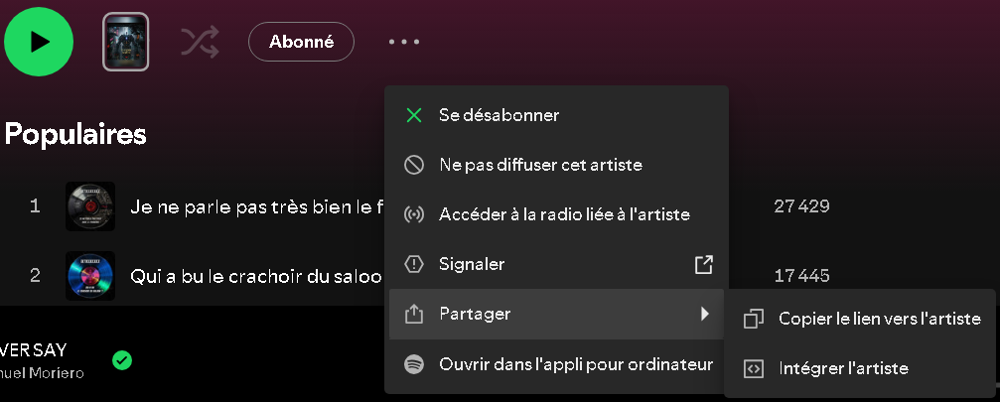
Les valeurs à coller :
Côté artiste : une seule valeur — ton Channel ID (commence par UC…). La clé API est partagée (gérée par l'admin), tu n'as pas à en créer. Saute directement à l'étape Channel ID ci-dessous. (Les étapes 1→5 ne concernent que l'admin, une seule fois, s'il met en place sa propre clé.)
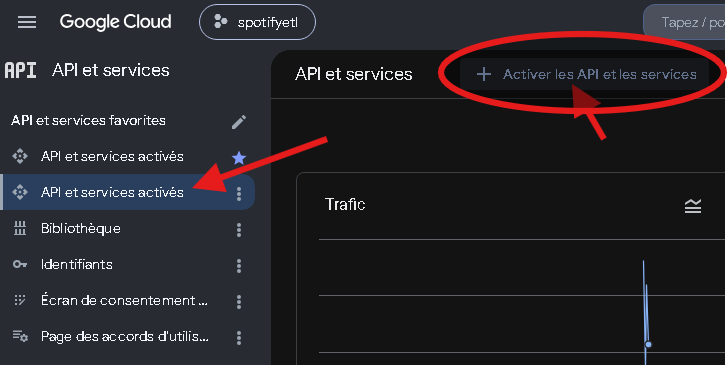
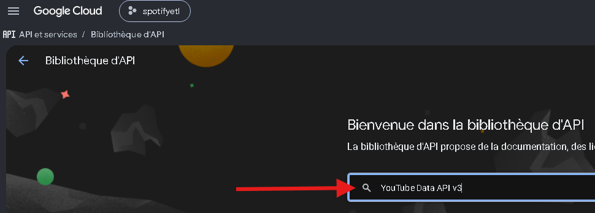
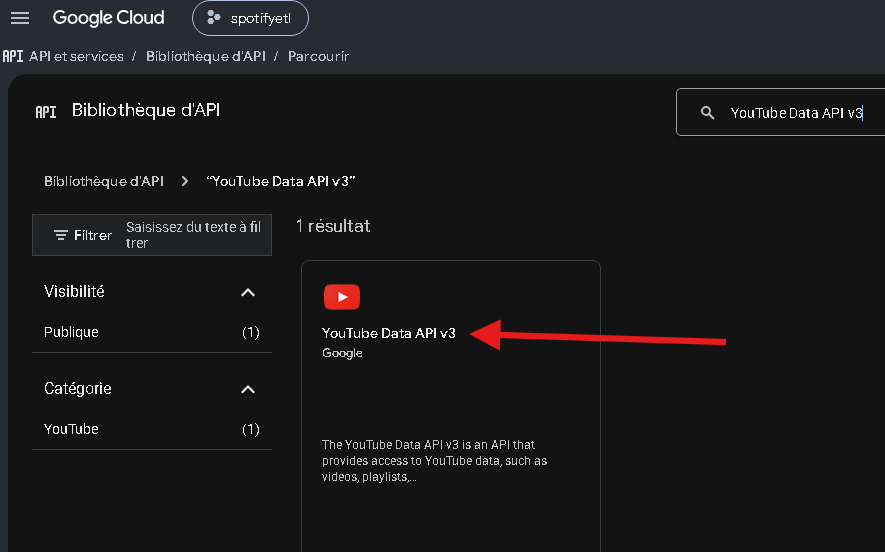
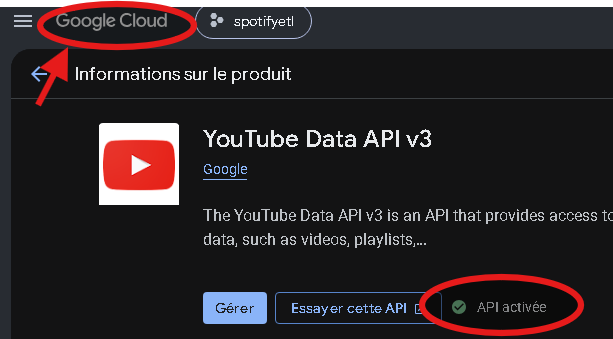
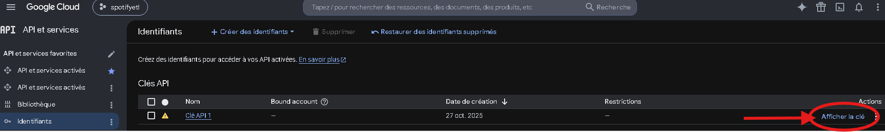
UC…).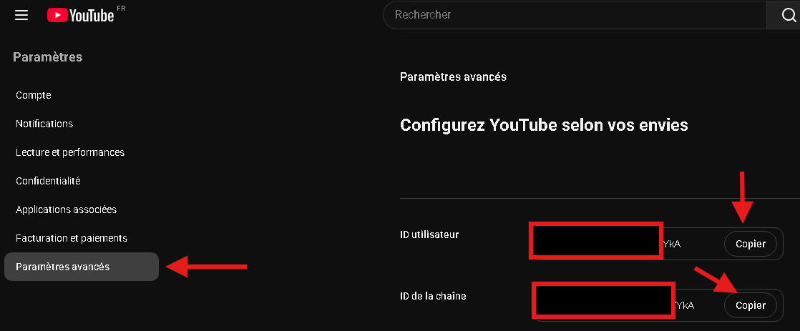
Les valeurs à coller :
Note — Quota gratuit ~10 000 unités/jour ; un dépassement renvoie 403 (temporaire).
Meta est configuré au niveau de la plateforme (app partagée). Vous fournissez uniquement votre Ad Account ID ; le token, l'app et Instagram sont gérés par l'administrateur.
adsmanager.facebook.com/adsmanager/manage/campaigns?act=123456789012345&business_id=… Si tu préfères ne coller que le numéro, prends celui qui suit act= et s'arrête au &. Avec ou sans le préfixe act_, les deux marchent : act_123456789012345 et 123456789012345 sont acceptés à l'identique.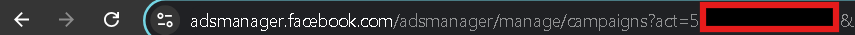
business_id=… (votre Business Manager) ni avec un ID d'ensemble de publicités (ad set) : seul le nombre après act= est le bon.Les valeurs à coller :
3 types de fichiers à exporter, tous avec le filtre « 12 mois ». Pour N titres, vous obtenez N + 2 fichiers (N timelines + 1 résumé + 1 audience). Exemple : 11 titres → 13 fichiers.
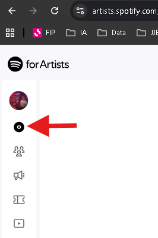
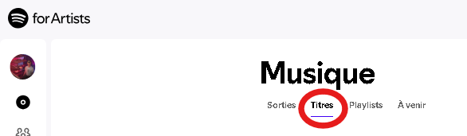
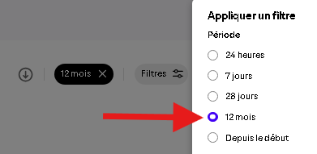
…-songs-1year.csv (auditeurs, streams, sauvegardes, date de sortie par titre).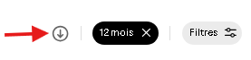
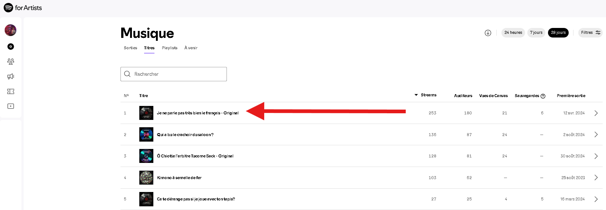
<titre>-timeline.csv (streams quotidiens). Répétez pour chaque titre.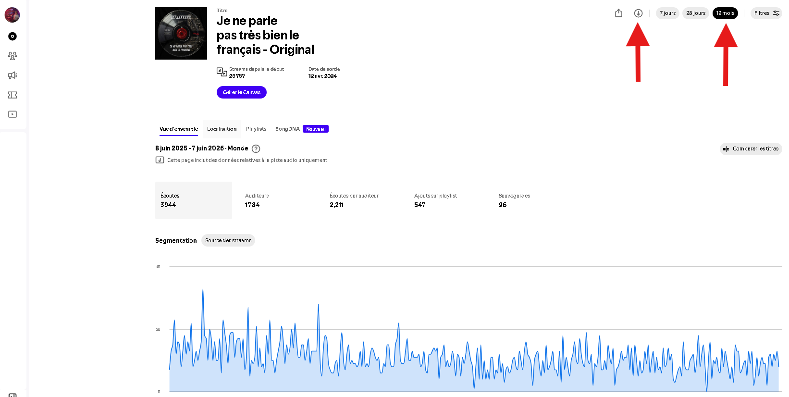
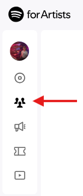
…-audience-timeline.csv (auditeurs/streams/followers au niveau artiste).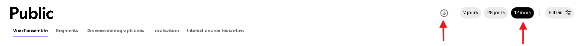
…-songs-all.csv est d'ailleurs rejeté à l'import.| Fichier | Nom attendu | Colonnes |
|---|---|---|
| Timeline par titre | <titre>-timeline.csv | date, streams |
| Résumé titres (12 mois) | …-songs-1year.csv | song, listeners, streams, saves, release_date |
| Audience | …-audience-timeline.csv | date, listeners, streams, followers, playlist adds, saves |
Apple Music for Artists n'a pas d'API : l'export CSV de la performance par morceau est la seule source (1 seul fichier). Réglez bien la période sur Depuis le début pour un historique complet. En-têtes FR et EN reconnus.
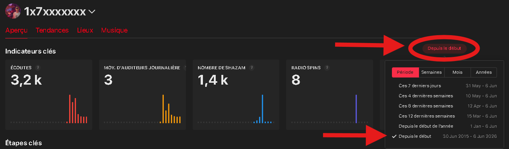
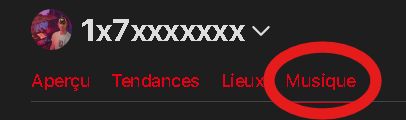
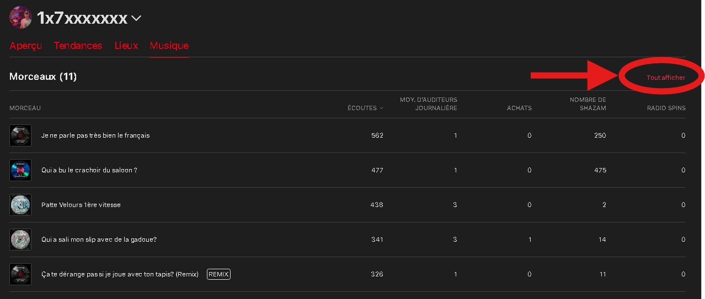
songs_….csv (Morceau, Écoutes, Moy. d'auditeurs, Shazam, Radio Spins, Achats).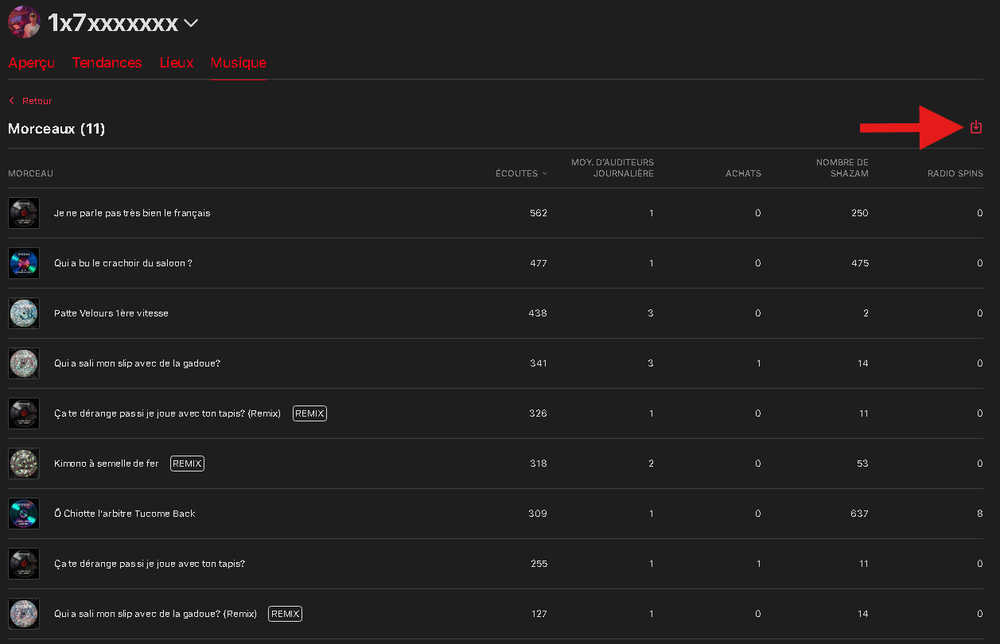
| Fichier | Nom attendu | Colonnes |
|---|---|---|
| Performance par morceau | songs_….csv | Morceau / Song Title, Écoutes / Plays, Auditeurs / Listeners (opt.) |
Deux types de rapports, à demander par année (itérez sur toutes vos années de catalogue) : le résumé par sortie (totaux mensuels par release) et le rapport de ventes (détail par ISRC/shop/pays). L'import détecte chaque type automatiquement.
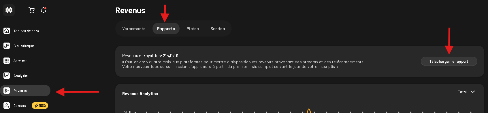
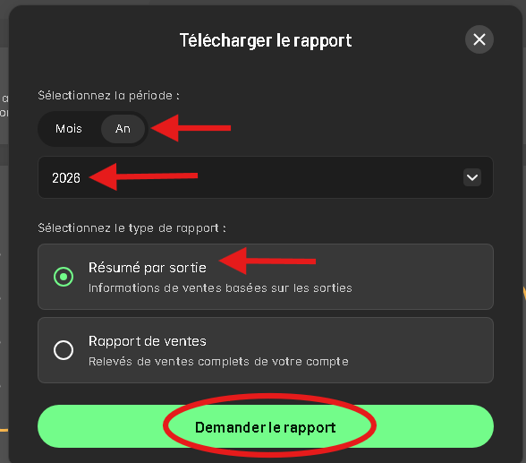
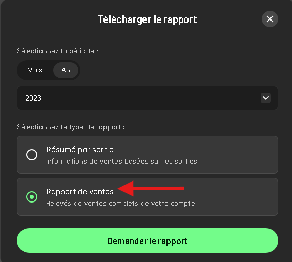
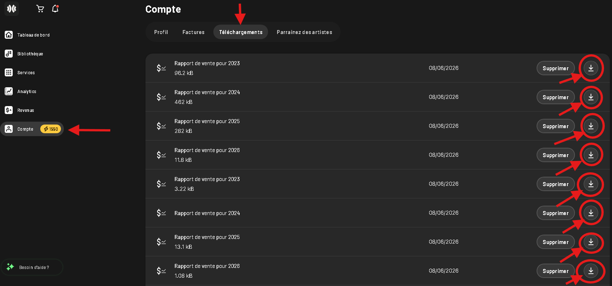
| Fichier | Nom attendu | Colonnes |
|---|---|---|
| Résumé par sortie | *.csv | Statement date, Release title, Track streams, Total revenue |
| Rapport de vente | *.csv | Sales date, ISRC, Shop, Revenue EUR |
Un seul export couvre tout votre historique : le rapport détaillé de la Bank (une ligne par plateforme × titre × pays × mois, montants en USD — le taux de conversion USD→EUR se règle au moment de l'import). Format .tsv ou .csv, les deux sont reconnus automatiquement.
| Fichier | Nom attendu | Colonnes |
|---|---|---|
| Bank details (détail des revenus) | *.tsv / *.csv | Sale Month, Store, Title, ISRC, Quantity, Earnings (USD) |